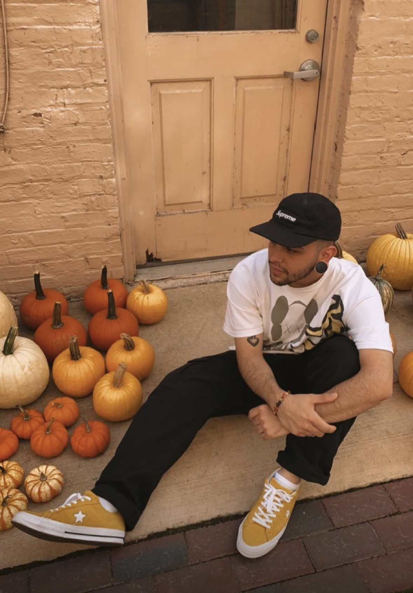

Myself
A little bit about me.
- Myself
- Tattoos
- Custom Kinives
About
Hello, my name is Lucas Silva. I'm 23 years old and I came from Brazil about 8 years ago. I graduated High School in (HHS) Huntley High School about 4 years ago, right when covid-19 started... not a super fun era to graduate.
I was born and raised in Brazil up until I was 15 in the state of São Paulo in a small town called Mogi Das Cruzes. I try to visit my home country once a year since my whole family is there, I miss them a lot.
I live here with my dad and stepmom, and now with a little sister too, she is seven months old. I also have a little sister in Brazil on my moms side of the family, she is going to be 16 next month... time really flies.
My dad brought me so I could have a better education and more opportunities in life. I love it here but I do miss Brazil a lot since everybody I grew up with is still there.
I grew up doing a lot of sports, such as skateboarding, swimming and (MMA) or multiple martial arts. Because of that it gave me a head start to wrestling in High School, by the end of my first try out, my coach put me in varsity wrestling. Other facts about myself are that I love to cook, since I was raised by grandma I was always following her around the kitchen and learning new things with her.
I love pets, especially dogs... I helped raise about 16 dogs my whole life, my family would take unfortunate dogs from the streets, take care of them and give them a home, that's why I have such an attachment with dogs. Anyways, this was a little bit about myself. Thank you for visiting my website.